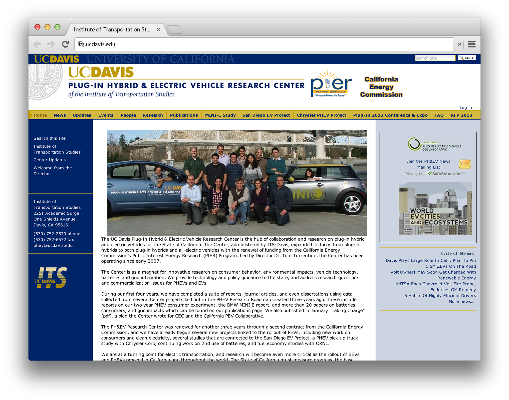

Afraid you won't find a
developer who can
also design?
I'd love working with you if you...
- Are building customer-facing products
- Love simple, flat design
- Need innovative user interfaces
- Are a strong proponent of visual consistency
- Appreciate clean code
- Do user testing / market research before starting work on a solution
We're not a match if you...
- Offer plumbing + poodle day care services and you want a website that encompasses the breadth that your company has to offer
- Still believe drop shadows and glossy buttons are cool
- Tend to think EVERYTHING IS IMPORTANT
- You don't understand why feature creep is a problem
Teal (Built at Ask Ziggy)What happens when you push the iOS browser to it's limit?
A web app that passes
for native
There were very few robust, and fast tools to build upon when I built the app. The screen tansitions and all the UI was coded from scratch.
In the end, however, making the app appear like a native iPhone app proved to be more trouble than it was worth. In any case, I love showing this off because it shows that I can program right up to the limit of what iOS Safari can handle.
Building iPhone apps with HTML5, CSS, and Javascript is several times more difficult than doing the same thing for desktop web browsers.
The idea behind...
...the app was to create a hotel booking app that could also be used by voice. The target is busy frequent travellers. Sometimes they might be booking a hotel last minute in their car, and this app is designed to be the solution to that.
The small details
Page transitions were difficult to pull off, but in the end it's what makes the app feel right.
Gray, white, gray, white...
A unique motif throughout the the app is the alternating white and gray sections. No popular apps at the moment of development used alternating stripes to brand the app.
The motif can be used for progress bars, or sections or disabled buttons.
Avoiding the
uncanny valley
I wanted to avoid the uncanny valley by making interface components that don't look like anything you'd see on iOS or Android, but still behave like native controls.
Built with...
- PhoneGap
- jQuery
- Backbone
- underscore
- Require.js
- Ruby
- HTML5, CSS
- Sass
- HAML
- Photoshop
- Illustrator
Rhapsody Voice (Built at Ask Ziggy)What if you could play any song by just by saying it's name?
The concept
What if you could control your iPhone or iPad music app without taking your eyes off the road? The app could play any popular song requested.
Preamble (Built at the Launch Hackathon)What if resumés were invented in the internet era?
The main was to build a slide deck that acts as a clutter-free resume for mobile
- Sean Ho (idea, presenter)
- Yaadhav Raaj (backend)
- Nicki Winstead (logo)
- Juan Juan (ideation, helped with odds and ends)
- Me (Javascript development, design)
WYSIWYG on mobile?Yes, and lets make the whole app in a single hackathon
I decided on using a wizzywig UI so that I did not have to create two user interfaces. I don't know why more of these types of user interfaces don't exist on the internet.
Bullets are useful. Let's use them everywhere
Since most resumes are essentially bullet points, this makes for a simple, flexible system to allow anyone to express themselves professionally. Users can also add and remove slides.
New slides are automatically titled as Skills, Experience, or Education to prevent to give users one less thing to decide.
Who needs arrow buttons?
Users can navigate between the slides by swiping their finger from right to left on the screen.
One-click
instant preview
Once you press the "Done" button you can see how everyone else on the internet will see your resume deck. The only difference is that they won't see an edit button.
The "Request a Meeting" link on the top of each slide acts as a call to action. Pressing it takes you to the contact page.
ITS Website (Built at UC Davis)Porting an old static website
to an advanced CMS-driven one
The old website was in need of attention. The entire website was hand-coded in PHP. We wanted to reorganize and update the content from the old website, create a new website with a better look, and have a system that is easy for non-programmers to maintain.
Before
The screenshot shown is a different website that uses the same template that the old ITS website used.
